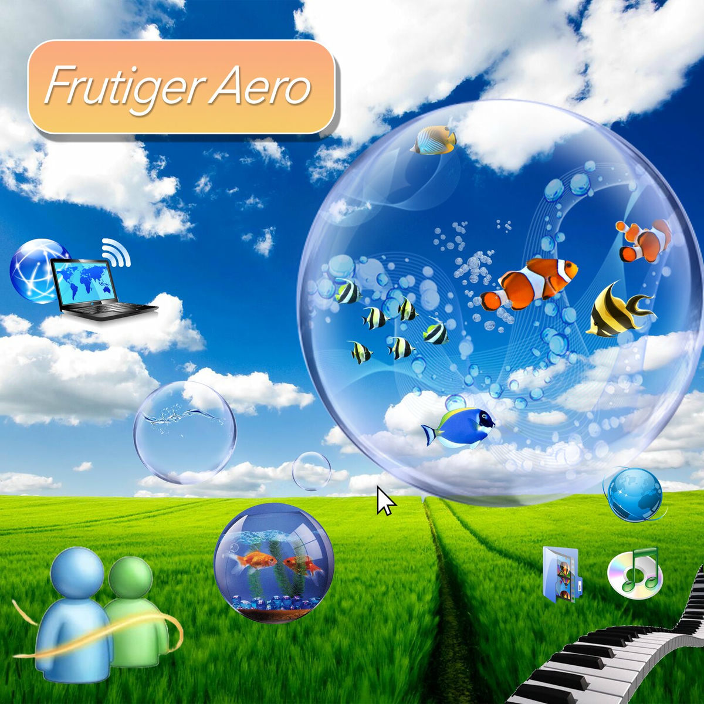

O motivo de estar dando início a este projeto é uma maneira de poder evoluir minhas habilidades como um
desenvolvedor web e de poder expor e catalogar o máximo de informações, ideias e curiosidades que envolvem essa
estética, o Frutiger Aero.
Sabendo o motivo da criação desse site, vamos começar a discutir e espalhar informações sobre essa envolvente e
reconfortante estética já muito utilizada anteriormente.
Frutiger Aero é uma estética de design digital e de interface que foi popular entre meados dos anos 2000 e início dos anos 2010, caracterizada por um visual "futurista", otimista e com brilhos, reflexos e transparências que imitavam elementos naturais como água e vidro, combinados com tecnologia. O nome do estilo é uma junção do designer suíço Adrian Frutiger, conhecido por suas fontes legíveis, e o Windows Aero, a interface gráfica do Windows Vista. Também ficou popularmente reconhecido atualmente como "O futuro que nos prometeram", no qual tínhamos a presença de elementos da natureza em combinação com a tecnologia, visto que nos dias atuais estamos longe de tal idealização. Posteriormente entraremos em detalhes sobre sua trajetória.
